Il n'y a rien à installer au sens habituel : l'application vit sur une page web. Elle s'ouvre dans n'importe quel navigateur récent, sur ordinateur comme sur téléphone, à cette adresse :
https://niamort36-prog.github.io/TableauSuiviPrepa/
Aucun compte, aucun mot de passe. Les données sont partagées en temps réel entre tous ceux qui ouvrent l'adresse : ce qu'une personne enregistre apparaît chez les autres.
Plutôt que de retaper l'adresse, ajoutez un raccourci :
| Appareil | Comment faire |
|---|---|
| Ordinateur Chrome ou Edge |
Menu ⋮ en haut à droite, puis Enregistrer et partager →
Créer un raccourci. Cochez Ouvrir dans une fenêtre pour que
l'application s'ouvre sans barre d'adresse. |
| Android Chrome |
Menu ⋮, puis Ajouter à l'écran d'accueil. |
| iPhone / iPad Safari |
Bouton Partager (le carré avec une flèche), puis Sur l'écran d'accueil. |
Ctrl + F5 sur ordinateur. Si cela ne suffit pas, ajoutez
?v=2 à la fin de l'adresse : le navigateur la considère comme nouvelle
et ne peut plus servir sa copie en cache.
L'accueil liste les chantiers en cours de l'équipe affichée, du plus proche au plus lointain. Chaque carte se lit d'un coup d'œil.
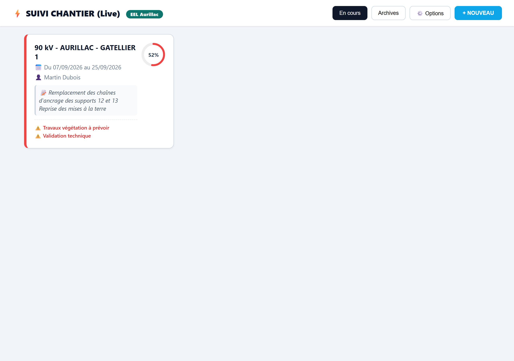
| Élément | Ce qu'il indique |
|---|---|
| Bordure verte | Aucune date butoir dépassée ni proche. |
| Bordure jaune | Une échéance approche. |
| Bordure rouge | Au moins une date butoir est dépassée. |
| Jauge | Part des tâches renseignées, sur les 25 tâches du suivi. |
| Liste d'alertes | Les tâches en retard (⚠️) ou proches de l'échéance (🕒). |
| 🚗 Déplacement | Le chantier nécessite un déplacement. |
Un clic sur une carte ouvre le chantier. Le bouton + NOUVEAU en crée un dans l'équipe affichée.
La fiche rassemble l'identité du chantier : la ligne concernée, les personnes, les dates, les numéros d'ordre et la description des travaux.
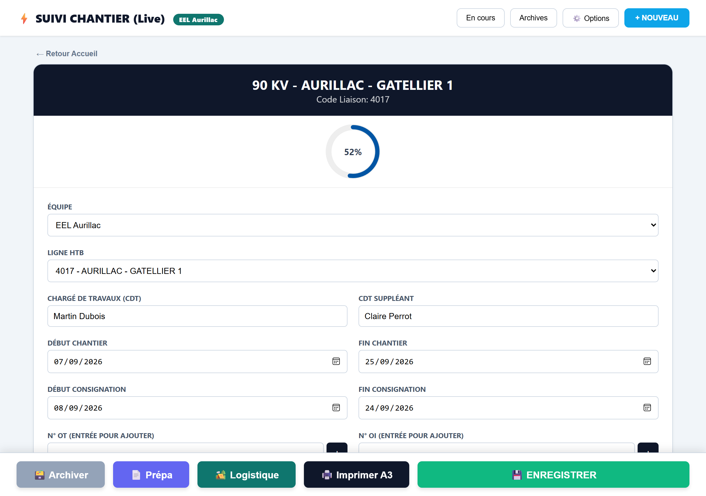
Sous la fiche, les 17 tâches du suivi sont réparties en cinq familles. Chacune a un délai propre, compté en arrière depuis la date de début du chantier. Une tâche à 90 jours doit donc être faite trois mois avant le démarrage.
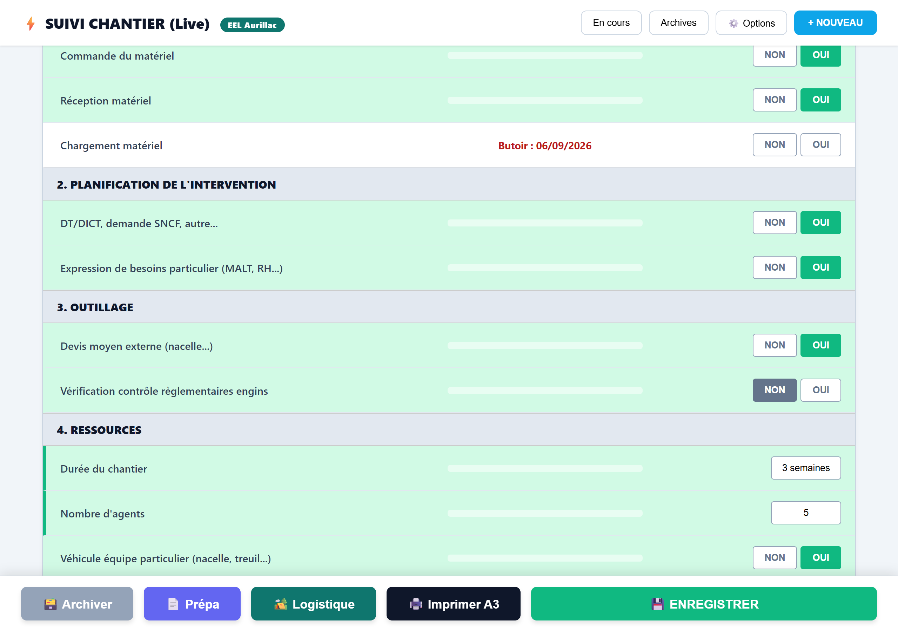
| Couleur | Signification |
|---|---|
| Vert | Traitée : vous avez répondu OUI ou NON. |
| Jaune | L'échéance approche — un mois avant pour les tâches à 30 jours ou plus, cinq jours avant pour les autres. |
| Rouge | La date butoir est passée et la tâche n'est pas traitée. |
| Blanc | Pas encore d'échéance, ou tâche sans délai. |
Les deux lignes Durée du chantier et Nombre d'agents attendent une saisie libre, pas une réponse OUI/NON. Elles comptent dans la jauge dès qu'elles sont remplies.
Le bouton 📄 Prépa ouvre la liste des documents à produire : NIP, constat d'adéquation, mode opératoire, calculs, PPE, MALT/CC, listes de matériel et d'outillage.
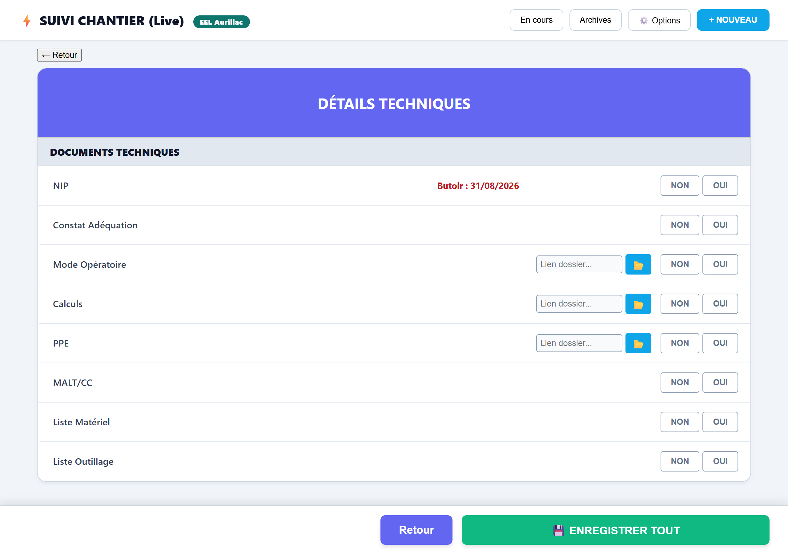
Trois documents acceptent un lien de dossier : mode opératoire, calculs et PPE. Collez-y un chemin réseau ou une adresse, le bouton 📂 l'ouvre.
K:\Dossiers\... ne peut pas être ouvert depuis une
page web : les navigateurs l'interdisent pour des raisons de sécurité. Le champ reste
utile pour noter l'emplacement, mais il faudra le copier à la main dans
l'explorateur.
Le bouton 🏕️ Logistique ouvre un espace à huit onglets qui rassemble tout ce qui entoure le chantier. Aucune de ces informations n'entre dans le calcul d'avancement : la jauge ne bouge pas quand vous les remplissez.
C'est aussi cet espace, et lui seul, que voient les personnes à qui vous transmettez le lien de partage.
Qui dort où, combien de nuits, qui a payé — et la répartition calculée toute seule.
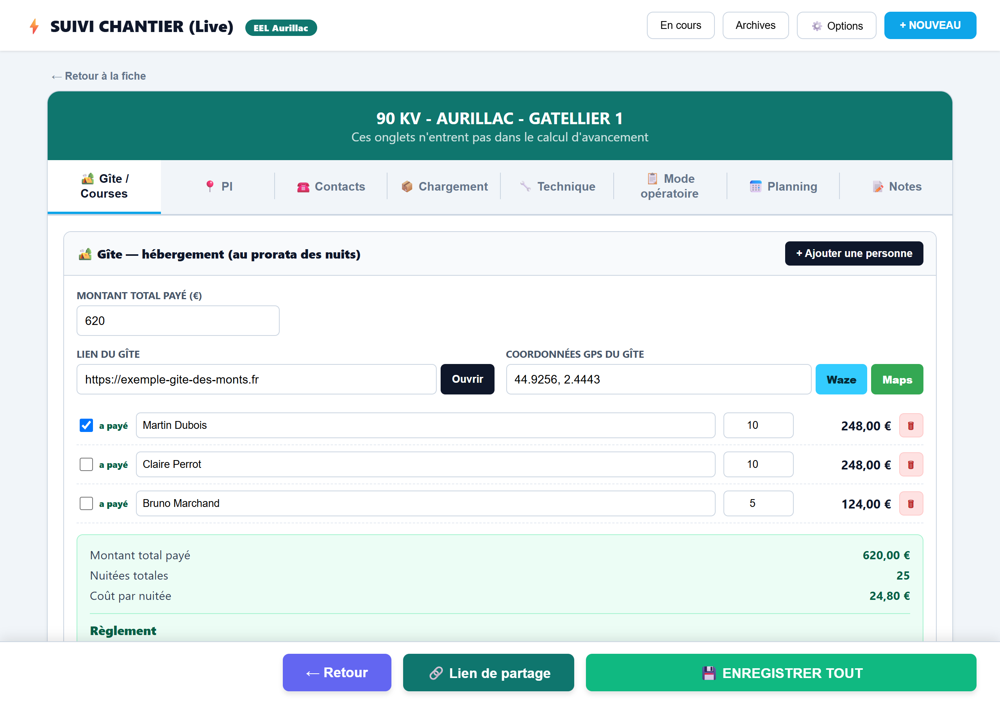
Les lieux utiles : rassemblement, accès, base travaux. Chaque point s'ouvre d'un clic dans Waze ou dans Google Maps.
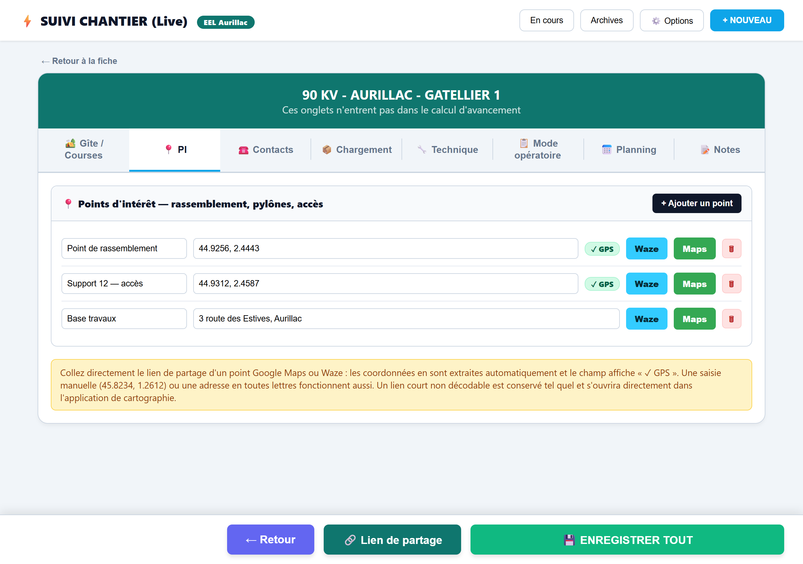
Le plus simple est de coller un lien de partage depuis Google Maps ou Waze :
les coordonnées en sont extraites automatiquement. Une saisie manuelle
(45.8234, 1.2612) fonctionne aussi, virgule décimale française comprise, tout
comme une adresse en toutes lettres.
maps.app.goo.gl ne peut pas être décodé par la page.
Il est alors conservé tel quel et s'ouvrira directement dans l'application de
cartographie : le résultat est le même pour vous.
Les numéros utiles, rangés dans les catégories que vous créez : RTE, sous-traitants, secours, ce que vous voulez.
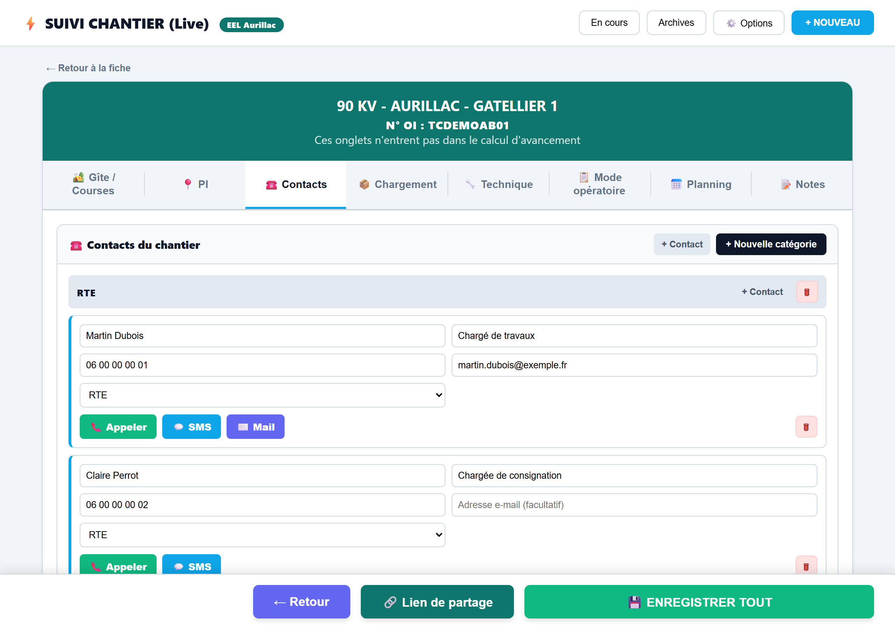
Le bouton Mail n'apparaît que si une adresse valide est renseignée. Sans numéro, Appeler et SMS restent visibles mais inactifs. Supprimer une catégorie ne supprime pas ses contacts : ils passent dans Sans catégorie.
Cet onglet fait le lien avec Invent'RTE, l'application d'inventaire, et donne accès aux paniers de chargement du chantier.
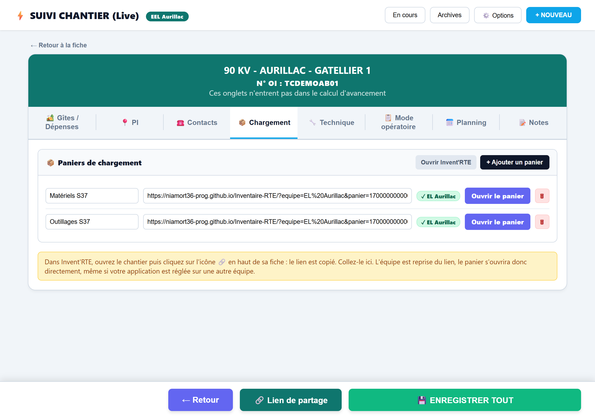
Pour rattacher un panier :
Le lien porte l'équipe : si votre Invent'RTE est réglé sur une autre équipe que celle du panier, il bascule tout seul. Un badge confirme l'équipe reconnue, ou signale un lien inexploitable.
Les efforts et les solutions de terre, pylône par pylône et portée par portée.
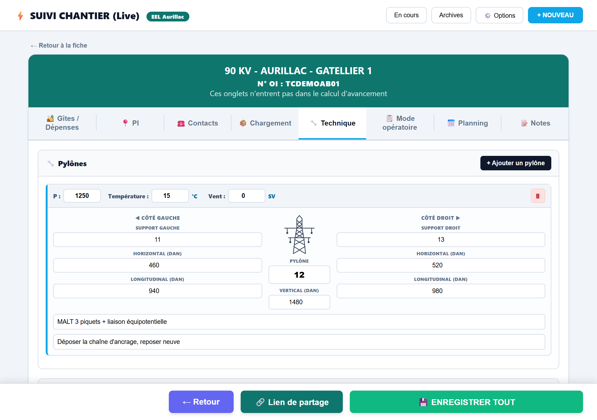
Chaque fiche se lit comme un schéma : le support concerné au centre avec son effort vertical, ses voisins de gauche et de droite avec leurs efforts horizontaux et longitudinaux. Au-dessus, le bandeau de paramètres : P, la température en degrés, et le vent en pascals — qui affiche SV dès que la valeur est nulle.
Le déroulé des opérations, en tâches et sous-tâches. Chaque fiche se replie sur son titre, sa période et ses intervenants.
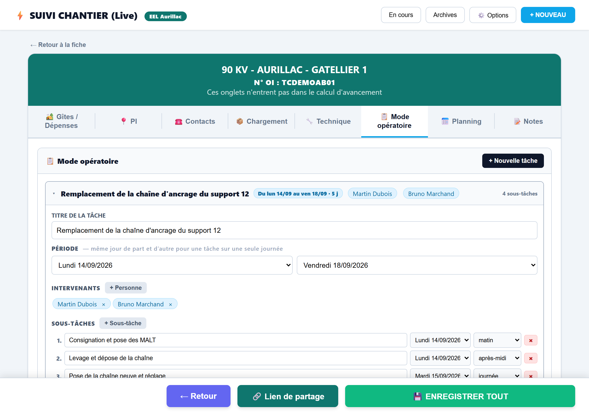
Une tâche couvre une période : du jour X au jour Y. Elle peut donc durer une journée comme plusieurs semaines. Choisir le même jour de part et d'autre donne une tâche d'une seule journée.
Ses sous-tâches se rattachent au plus fin : une journée, voire une demi-journée. C'est là que se joue le détail du déroulé.
Une vue par semaine, découpée en matin et après-midi, comme un agenda.
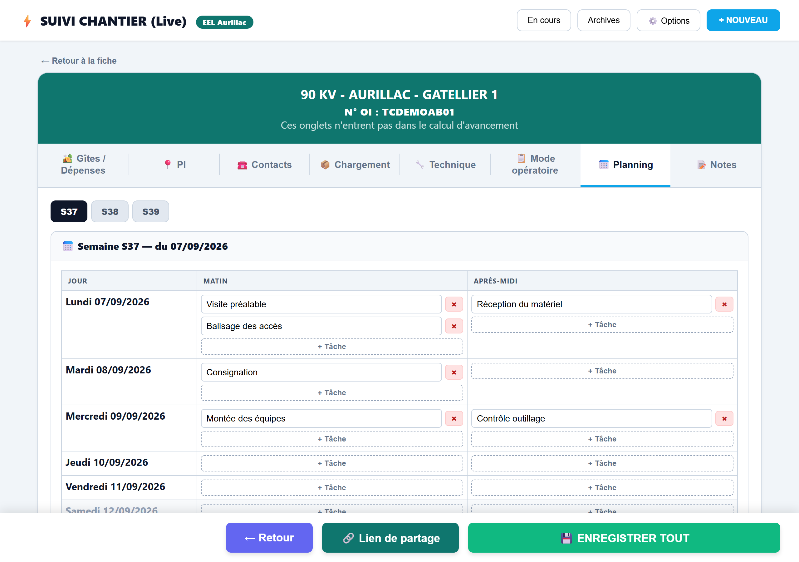
Les onglets de semaine — S37, S38, S39… — sont calculés à partir des dates du chantier. Si aucune semaine n'apparaît, c'est que les dates de début et de fin ne sont pas renseignées sur la fiche.
Chaque demi-journée accepte autant de tâches que nécessaire. Les week-ends sont grisés, les jours hors période atténués.
Un fil de notes partagé, où chacun signe de son nom.
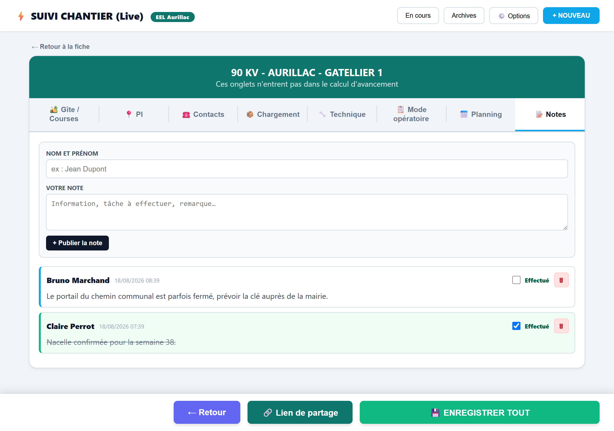
Votre nom est mémorisé sur l'appareil : vous ne le saisissez qu'une fois. La case Effectué barre la note sans la supprimer.
Depuis l'espace Logistique, le bouton 🔗 Lien de partage copie une adresse à transmettre. Celui qui l'ouvre ne voit que cet espace : ni la liste des chantiers, ni la fiche, ni les options.
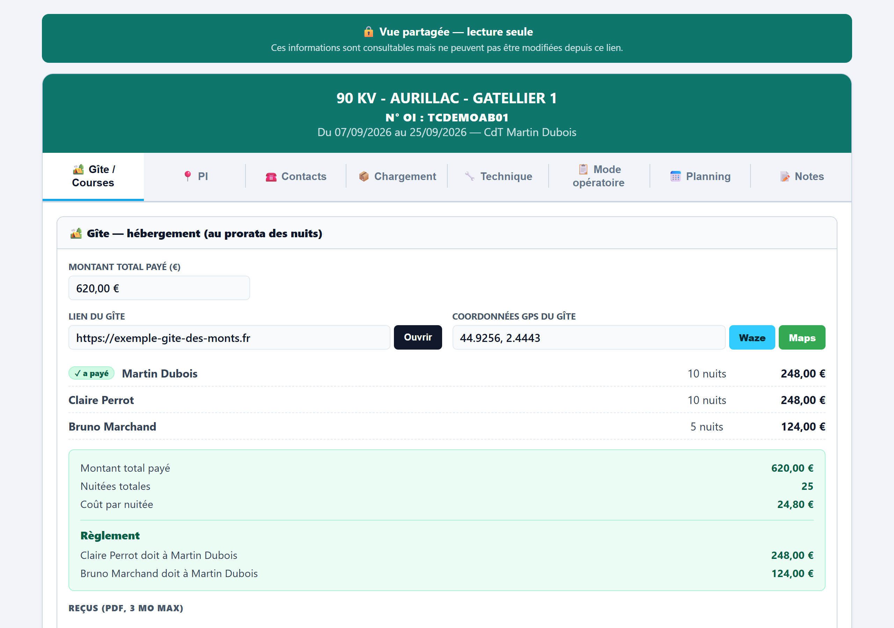
| Depuis le lien de partage | Possible ? |
|---|---|
| Consulter les huit onglets | Oui |
| Ouvrir Waze, Maps, un panier | Oui |
| Appeler, envoyer un SMS ou un courriel | Oui |
| Télécharger les reçus | Oui |
| Publier une note | Oui |
| Modifier quoi que ce soit d'autre | Non |
Le bouton 🖨️ Imprimer A3 produit une feuille A3 en paysage dont seule la moitié droite est occupée. Pliée en son centre, elle devient un porte-document avec la fiche chantier en couverture.
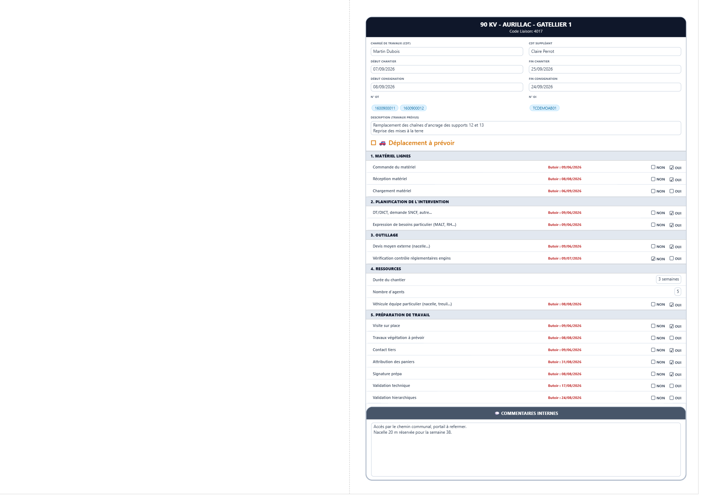
La fiche imprimée est allégée par rapport à l'écran : la jauge, le champ Équipe et le rappel de la ligne disparaissent — l'en-tête les donne déjà. Les aplats de couleur sont retirés, le statut restant lisible par les cases cochées. Les dates butoir sont affichées pour toutes les tâches, y compris celles déjà traitées, ce qui donne le calendrier complet du chantier. Le bloc de commentaires est agrandi pour écrire à la main.
La mise en page s'adapte toute seule au contenu : plus la fiche est remplie, plus elle est réduite, mais elle occupe toujours exactement la hauteur et la largeur utiles.
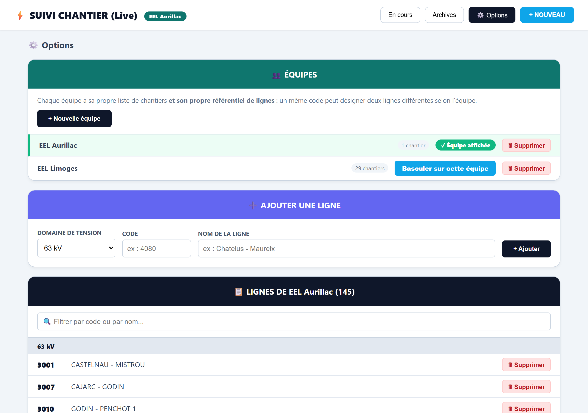
Chaque équipe a sa liste de chantiers et son propre référentiel de lignes. Le bouton Basculer sur cette équipe change l'affichage ; l'équipe active porte un bandeau vert, et une pastille la rappelle en permanence dans la barre du haut. Le choix est mémorisé sur l'appareil.
Une équipe ne peut pas être supprimée tant que des chantiers y sont rattachés : ils disparaîtraient de toutes les listes. Réaffectez-les d'abord depuis leur fiche.
La liste affiche les lignes de l'équipe affichée, groupées par niveau de tension, avec un filtre par code ou par nom. Pour ajouter une ligne : domaine de tension, code, nom. Les doublons de code sont refusés.
Supprimer une ligne utilisée par des chantiers est possible — un avertissement indique combien — et ces chantiers restent lisibles : la ligne y est signalée (ligne supprimée).
Le bouton 🗃️ Archiver, sur la fiche, sort le chantier de la liste des travaux en cours sans rien perdre. On le retrouve dans l'onglet Archives.
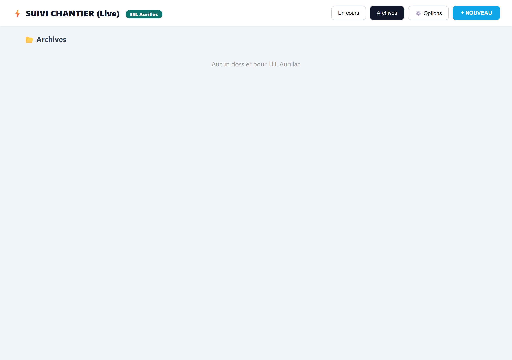
La suppression définitive n'est possible que depuis les archives, par la croix rouge en haut de la carte. Elle emporte aussi les reçus du chantier.
Toutes les mises en page s'adaptent à l'écran, en portrait comme en paysage.
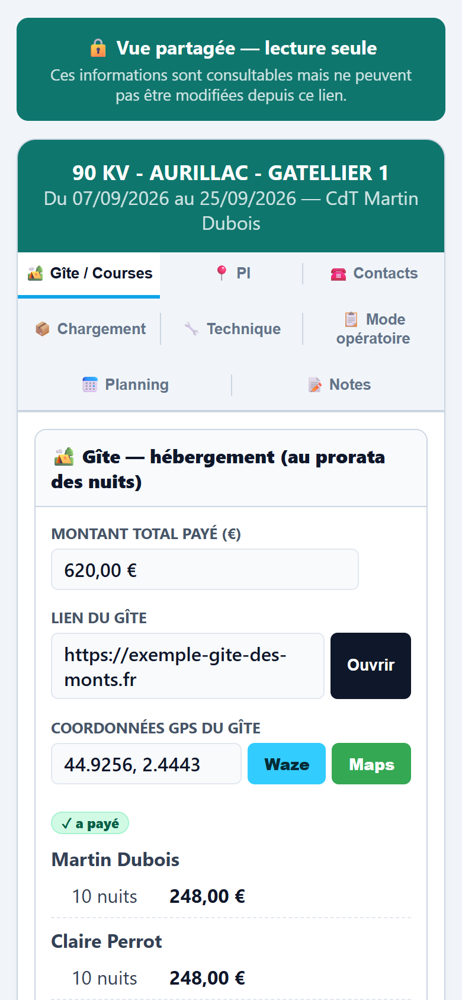
Vérifiez la pastille d'équipe en haut à gauche. Chaque équipe a sa propre liste ; vous regardez peut-être celle de l'autre. Le changement se fait dans Options.
Votre navigateur affiche une copie en cache. Ctrl + F5 sur ordinateur, ou
ajoutez ?v=2 à la fin de l'adresse.
Les semaines se déduisent des dates de début et de fin du chantier. Renseignez-les sur la fiche.
C'est normal. La jauge ne mesure que les 25 tâches du suivi de préparation. Tout ce qui se trouve dans Logistique & Terrain en est volontairement exclu.
Le chantier doit être enregistré au préalable — le reçu s'y rattache par son identifiant. Vérifiez aussi qu'il s'agit bien d'un PDF de moins de trois mégaoctets.
Oui pour les notes et les reçus, écrits en base immédiatement. Pour le reste, le dernier qui enregistre écrase le travail de l'autre : mettez-vous d'accord avant de remplir la même fiche à deux.
Dans une base Firebase hébergée en Europe. Elles ne sont pas chiffrées et l'accès n'est pas protégé par mot de passe : n'y mettez rien qui ne puisse être lu par quelqu'un d'extérieur.